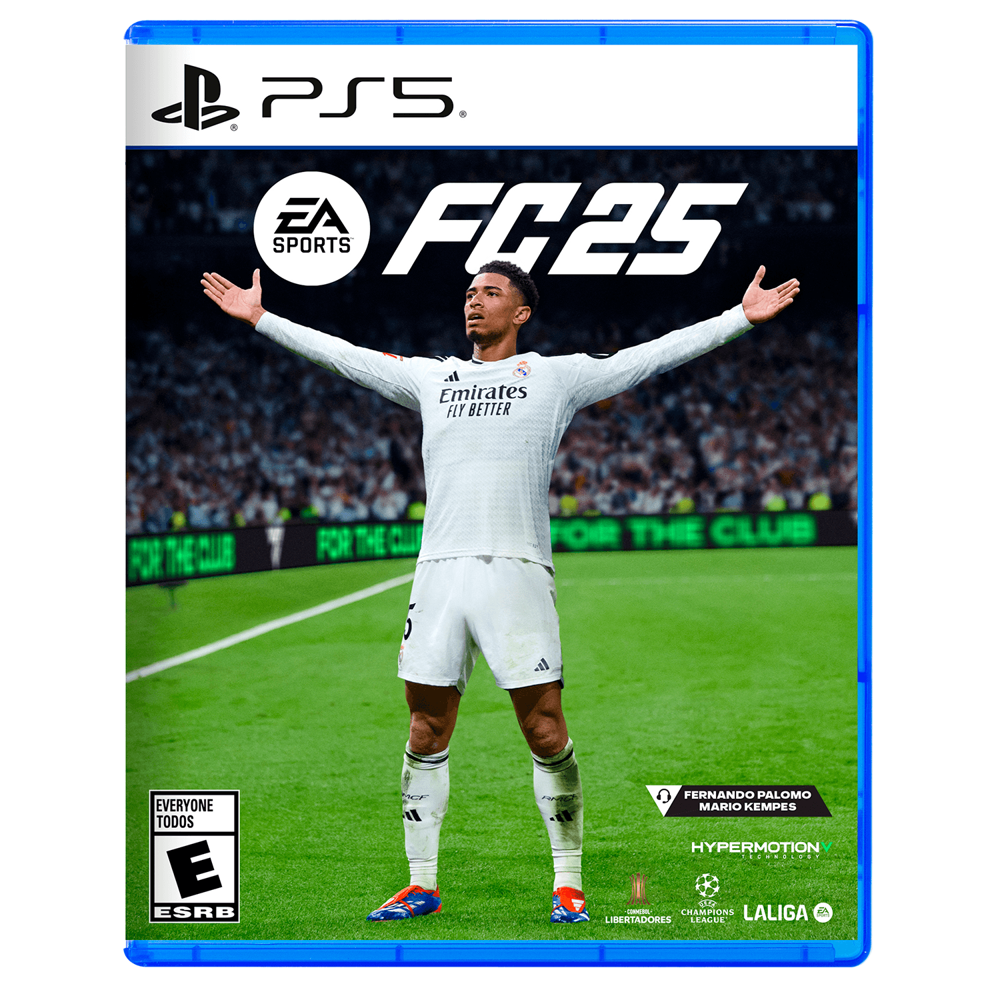
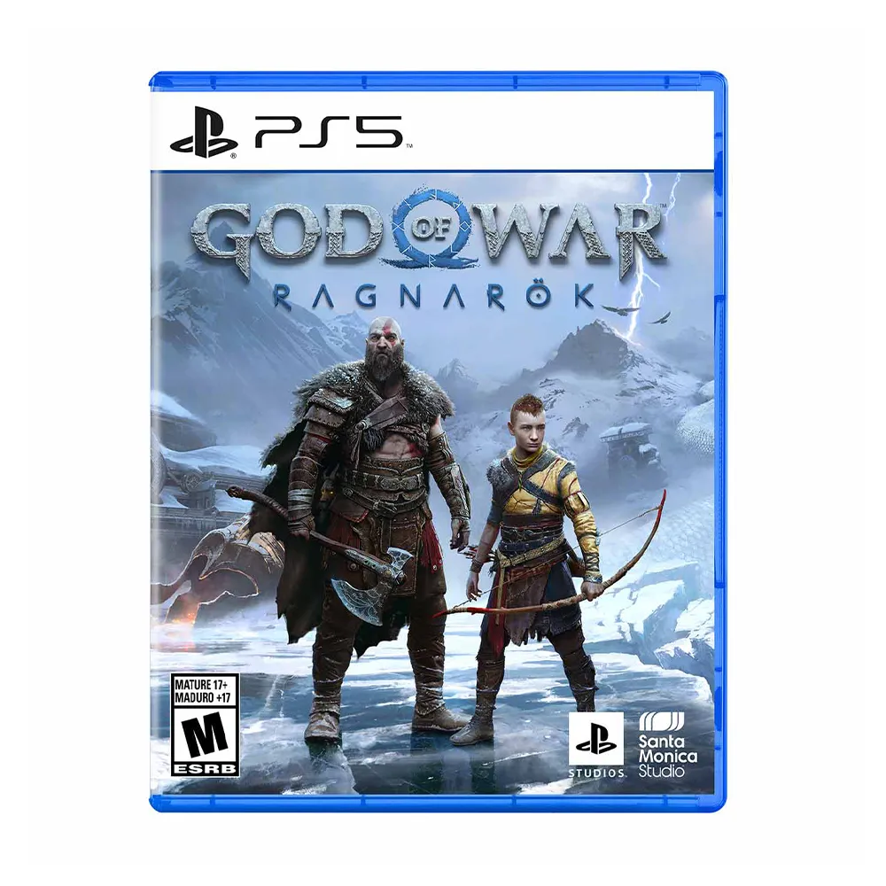
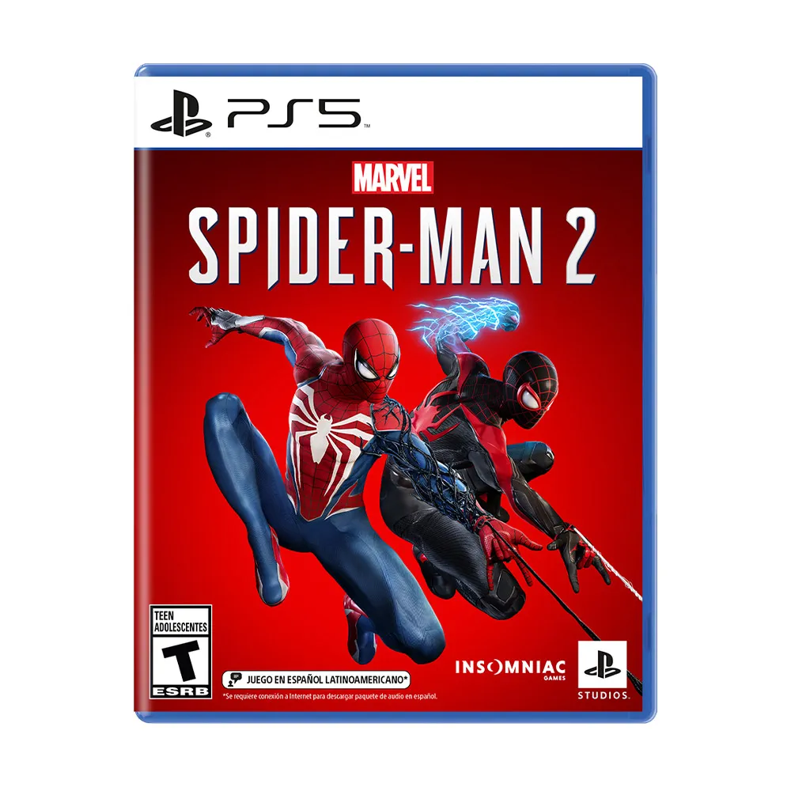
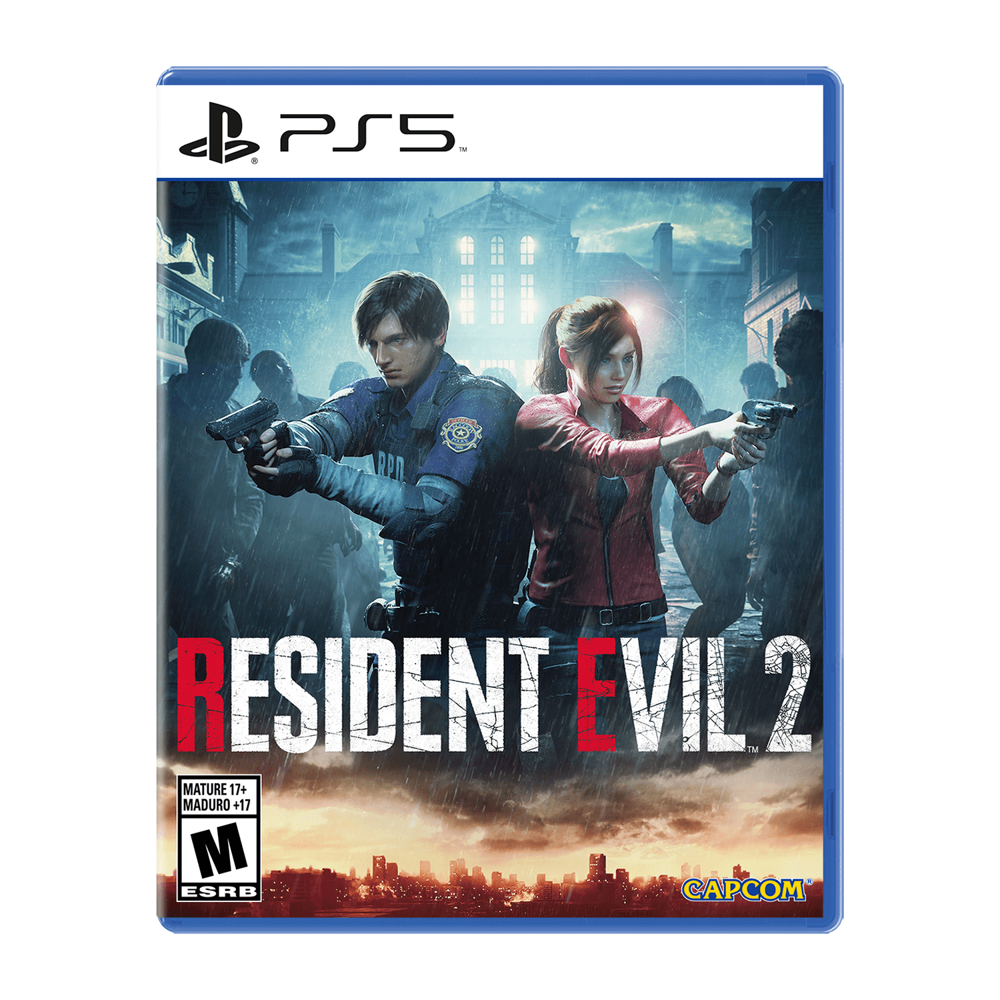

EA FC 25

EA Sports FC 25 (también conocido como FC 25) es un videojuego de fútbol, desarrollado por EA, y publicado por EA Sports...
Compra productos nuevos, usados, pre lanzamientos, lanzamientos y más desde nuestra tienda Online.

EA Sports FC 25 (también conocido como FC 25) es un videojuego de fútbol, desarrollado por EA, y publicado por EA Sports...

God of War Ragnarök es un videojuego de acción y aventura hack and slash en tercera persona desarrollado por Santa Monica Studio...

Marvel's Spider-Man 2 es un videojuego de acción y aventura de mundo abierto desarrollado por Insomniac Games...

Resident Evil 2 es un videojuego de terror y supervivencia desarrollado y publicado por Capcom...